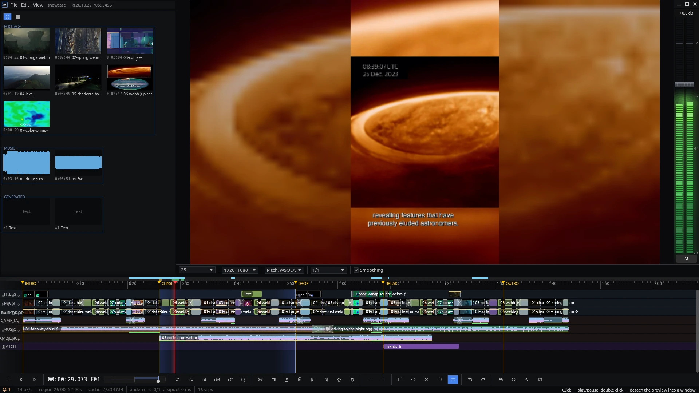
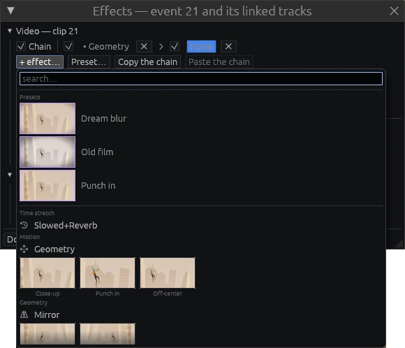
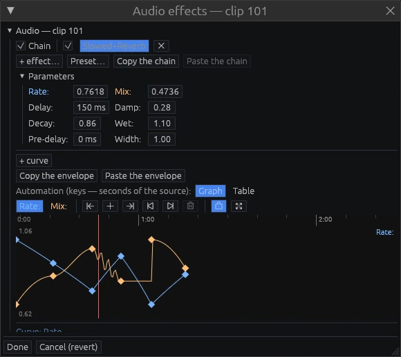
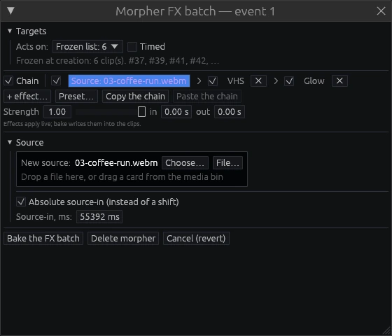
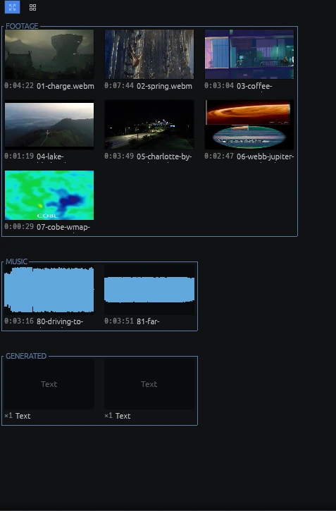
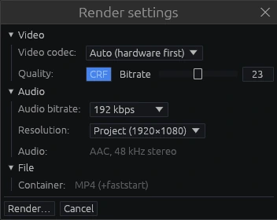

Editor de vídeo · Linux · Windows
Línea de tiempo multipista con previsualización en tiempo real, bobinas anidadas, 33 transiciones, 26 efectos de vídeo y 18 de audio, automatización con curvas en cualquier parámetro, rótulos y generadores. La exportación a MP4 renderiza exactamente lo que muestra la previsualización.

La previsualización y la exportación a MP4 componen el fotograma con el mismo código. El fotograma exportado es el que se vio en la previsualización.
El mismo proyecto renderizado dos veces en la misma máquina da archivos idénticos, se haya reproducido o recorrido lo que sea entre ambos renders.
Las formas de onda, las tiras de fotogramas y las miniaturas se leen de un índice que se crea una vez por archivo. El desplazamiento y el zoom de la línea de tiempo solo usan ese índice.
Los codificadores de NVIDIA, AMD e Intel se detectan automáticamente, con un codificador por software como alternativa. La exportación no escribe archivos temporales.
Pistas de vídeo, audio y morph. Cada pista tiene silencio, solo, bloqueo, sus propios efectos, opacidad y modo de fusión. Una pista se mueve arrastrando su cabecera.
La bobina STINGER desplegada en mitad del montaje. Las partes de la bobina fuera de esta instancia aparecen veladas.
El audio marca el tiempo y la imagen lo sigue, así que imagen y sonido no se desfasan en líneas de tiempo largas.
La barra superior fija una velocidad constante de −2× a +2×. La inferior es un shuttle que vuelve a cero al soltarlo; si se arrastra más allá de su extremo, llega a ±8×. Un doble clic en cualquiera de las dos vuelve a 1×.
Con Space pulsado, la reproducción acelera hasta 4× en cinco segundos; al soltarlo, frena. Una pulsación corta reproduce o pausa; dos seguidas paran al inicio de la región.
La velocidad negativa reproduce imagen y sonido hacia atrás con precisión de fotograma. Un evento también se puede invertir en sus propiedades.
La región se repite sin hueco: su inicio se mantiene en la caché.
Medidores por segmentos en escala de decibelios con retención de pico y un fader maestro en dB. En pausa, al recorrer el material, el medidor muestra el nivel bajo el cursor.
Un doble clic en la previsualización la abre en una ventana aparte. Al cerrar la ventana, la previsualización vuelve a su sitio.
Los efectos se encadenan en un evento o en una pista. Las ranuras se reordenan y se desactivan, la previsualización se actualiza al momento y la exportación ejecuta el mismo código. Cualquier cadena se puede guardar como preajuste.
26 efectos de vídeo. La galería muestra cada uno sobre un fotograma del evento seleccionado.

Cualquier parámetro de cualquier efecto, transición o rótulo se automatiza con curvas. Las claves de automatización están ligadas al material de origen: recortar un evento no las mueve. La cola de la reverberación sigue sonando después del final del evento.

Curvas de rate y mix de Slowed+Reverb. Los puntos se arrastran y una envolvente se puede copiar a otro evento.
Cortinillas, iris, reloj, empuje, deslizamiento, zoom, giro, barrido, persianas, cubo, vuelta de página, fallo, quemadura de película, fugas de luz y otras. Sus parámetros se automatizan igual que los de los efectos.
Preajustes para rótulos de nombre, titulares, máquina de escribir, texto en desplazamiento y créditos finales. Fuente, alineación, relleno, contorno, sombra y fondo se ajustan en cada rótulo.
Colores sólidos, degradados, formas, una cuenta atrás y señales de prueba.
Un mórfer está en su propia pista y, mientras dura, cambia los eventos que tiene debajo: aplica un lote de efectos, sustituye el origen o ambas cosas. Tiene fundidos y control de intensidad, y se puede aplicar a los eventos.

Seis eventos de destino: sustitución de origen, luego VHS y Glow.
Los archivos importados aparecen en el panel como tarjetas. Los archivos que faltan se abren como marcadores de posición y se vuelven a conectar cuando aparecen.

El nombre del grupo está en un hueco de su marco.
Las tarjetas muestran un fotograma, la duración o una forma de onda.
MP4: vídeo H.264, AAC 48 kHz estéreo, faststart. Si hay una región fijada, solo se renderiza la región.

Ajustes de render: códec, calidad, audio y contenedor.
Cada 30 segundos si el proyecto cambió, pero no durante un arrastre ni la reproducción. Los archivos se escriben de forma atómica, así que un cierre inesperado no deja un proyecto a medio escribir.
Un proyecto es un archivo JSON con rutas relativas a los medios, así que una carpeta copiada o movida sigue funcionando. En él se guardan la vista, los nombres de las pistas y la disposición del panel.
Las formas de onda y las miniaturas se guardan en un archivo junto al proyecto. Si se borra o cambia un archivo de origen, solo se reconstruye lo afectado.
La ventana de diagnóstico muestra el llenado de la caché y los fotogramas mostrados frente a los perdidos. Si la decodificación no alcanza a la reproducción, aparece un aviso.
Windows: cuando la tarjeta gráfica no puede ejecutar los efectos, también en una máquina virtual sin controlador gráfico, el render pasa a la CPU y lo avisa. Windows y Linux exportan la misma imagen.
Versión para Windows: un zip portátil. FFmpeg 6, 7 u 8 se busca en el sistema o se descarga en el primer arranque.
El editor pasa a llamarse kinetren. Compilaciones de publicación en Docker, estadísticas de uso anónimas que se pueden desactivar, documentación en inglés.
Formato de proyecto propio .kt. Los proyectos de versiones anteriores se abren mediante importación.
La atenuación de la música bajo la voz funciona como compresor sidechain. Imágenes fijas en la línea de tiempo. Controles de geometría en la previsualización.
Las bobinas publican parámetros, y cada copia tiene sus propios valores. Las curvas de automatización ganan formas de segmento y fórmulas.
Galería de efectos con vista previa sobre el fotograma del propio evento, preajustes de efectos, preajustes de animación de rótulos.
33 transiciones. Rótulos y generadores.
Bobinas anidadas. Bloqueo del proyecto y recuperación tras un cierre inesperado.
14 efectos de audio y 16 de vídeo nuevos.
Slowed+Reverb ralentiza la imagen junto con el sonido.
Transiciones entre eventos, 16 tipos. Un único editor de automatización con gráfico y tabla.
Render en GPU. Automatización por claves de los parámetros de los efectos de vídeo.
Interfaz en cinco idiomas: inglés, español, chino simplificado, árabe y ruso.
Panel de medios con disposición libre y cuadrícula. Menús Archivo, Editar y Ver. La línea de ayuda en la parte inferior de la ventana.
FFmpeg 6, 7 u 8 cargado en tiempo de ejecución. Exportación a MP4 dentro del editor con elección automática del codificador por hardware. El mórfer.
Reescrito en Rust: motor de audio, deshacer, formato de proyecto, decodificación en segundo plano.
Las versiones para Linux y Windows están en la página de publicaciones. En Linux, descomprime el archivo y ejecuta el instalador: instala todo en tu carpeta personal sin root, añade kinetren al menú de aplicaciones y registra los archivos de proyecto .kt.
# Linux: descomprimir e instalar tar xf kinetren-*-linux-x86_64.tar.gz cd kinetren-*-linux-x86_64 ./install.sh # o renderizar desde una terminal kt-cli export project.kt out.mp4
~/.local: binarios, iconos, entrada de menú y el tipo de proyecto .kt